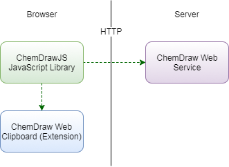

Understanding ChemDraw JS Components
Components Overview
ChemDraw JS consists of three components.
ChemDraw JS JavaScript Library
ChemDraw Web Clipboard
ChemDraw Web Service

The ChemDraw JS JavaScript library is the core component and is required to support client side functionality.
ChemDraw Web Clipboard is an optional component. It should be installed on the client side if the extended copy and paste feature needs to be enabled.
Please refer to the ChemDraw JS 17.1 User Guide about how to enable the ChemDraw Web Clipboard on browsers.
ChemDraw Web Service is an optional server-side component. It is required only if any of the following features are needed.
Tool: Structure to Name
Tool: Name to Structure
API: findReactions
API: getProperties
API: getSVG
API: getMolecularWeight
API: nameToStructure
API: structureToName
Please refer to Configuring ChemDraw JS about how to enable or disable features.
ChemDraw JS JavaScript Library
The library includes core javascript files, images, and chemical resources. To load the library, the web page should load the script chemdrawweb.js. This script will load all the other required resources.
<script src="https://your-own-url/js/chemdrawweb/chemdrawweb.js">
</script>
The URL of the library should be changed to the actual URL of your own ChemDraw JS deployment.
The library can run on all modern desktop browsers such as Chrome, Firefox, Safari, Edge, and IE. However, it is not optimized for mobile browsers. Please refer to the ChemDraw JS 17.1 Hardware and Software Requirements Guide for details.
ChemDraw Web Clipboard
To exchange chemical data with other programs, such as ChemDraw Desktop, Marvin, BIOVIA Draw, etc, via system clipboard, the end user has to install and enable ChemDraw Web Clipboard extension or applet in the web browser.
The ChemDraw Web Clipboard extension is supported in the following browsers.
Google Chrome 53 or later
Mozilla Firefox 50 or later
Apple Safari 11 or later (macOS 10.12 or later)
In Microsoft Internet Explorer 11, the ChemDraw Web Clipboard applet should be enabled to support extended copy and paste. Java Runtime Environment(JRE) should also be installed and enabled. To check if a JRE is properly enabled, please open the page https://www.java.com/en/download/installed.jsp in IE.
The following browsers are no longer supported.
Microsoft Internet Explorer: All versions prior to 11
Mozilla Firefox: All versions prior to 50
Apple Safari: All versions prior to 11
Microsoft Edge is not supported
ChemDraw Web Service
ChemDraw Web Service offers RESTful APIs to process chemical data so that it can support more powerful image rendering, chemical property calculation, etc. RESTful APIs are not exposed to the public. To invoke the web service functions from the web page, the ChemDraw JS library should be loaded. Please refer to the ChemDraw JS 17.1 API Reference Guide for details.